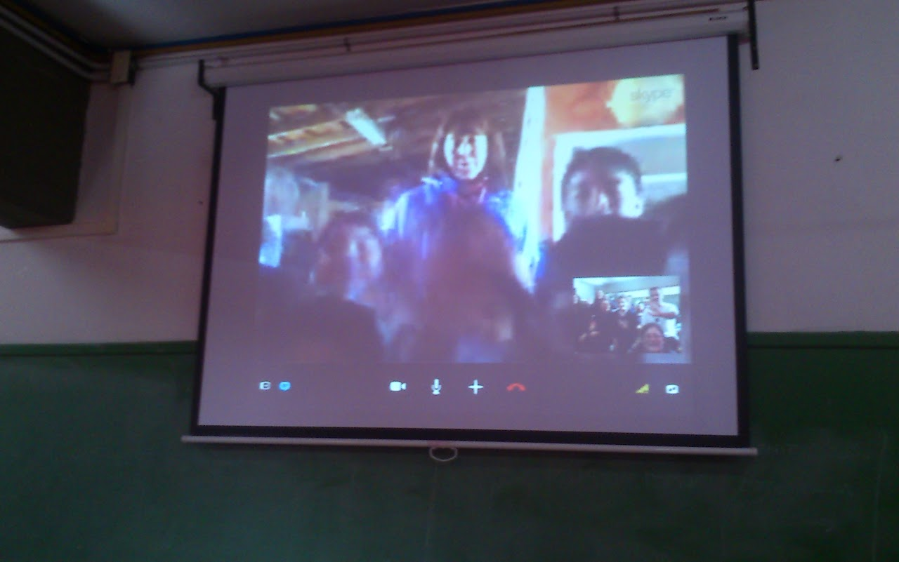

Historia de una amistad


En el año 2014, gracias a la comunicación digital, hemos empezado a fortalecer vínculos y amistades los cuales nos facilitaron el trabajo colaborativo que hasta hoy seguimos realizando. En las imágenes se muestra la primera comunicación de los alumnos pertenecientes al Taller de Arte y Arqueología del colegio Winter Garden y la comunidad de "El Bañado".